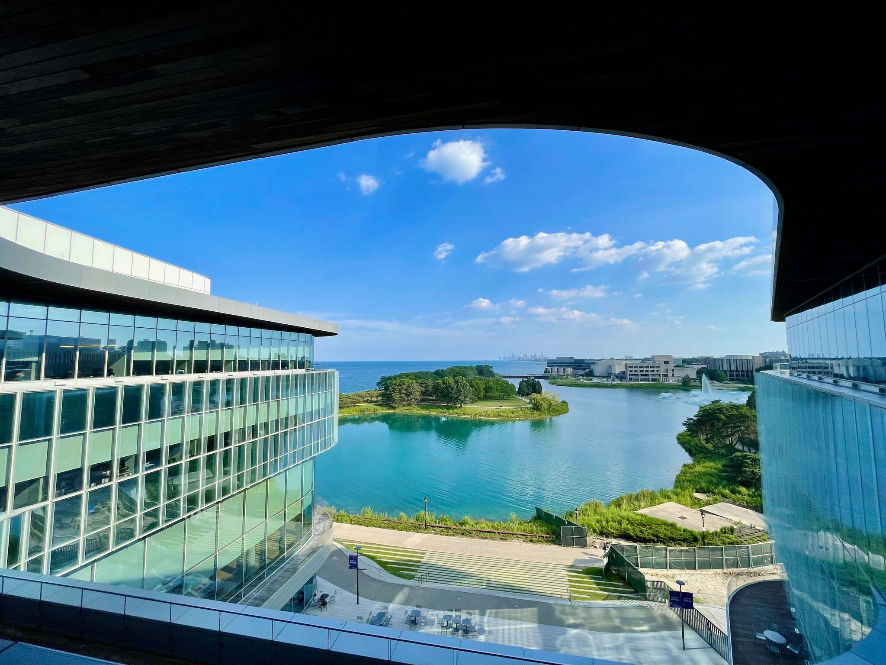
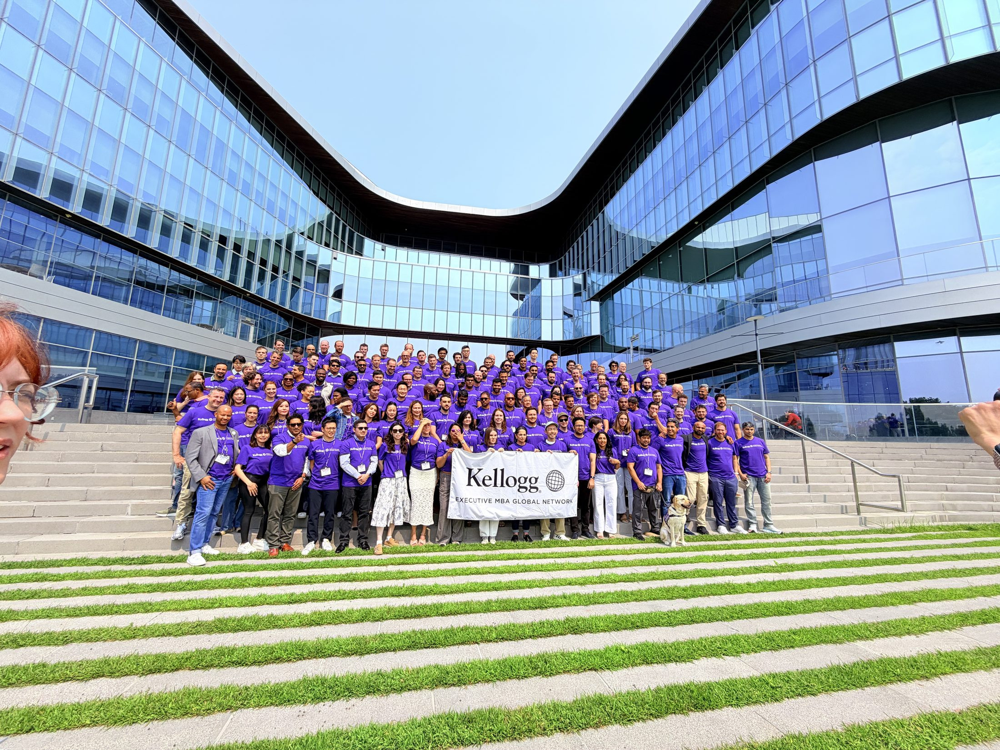

Chen Gao · Guanghua–Kellogg EMBA, GK12
VP, Big Data & AI, GLP · former CDO, Decathlon China
It came with me to class, to the Loop, to the airport. [ Chen: one line on where the fish came from and why you kept filming it — the sillier the better, this is the line that makes the audience decide to like you ]
[ Chen: the business question you actually carried — e.g. “how do I get an AI roadmap past a room of people who don’t want it?” ]
[ Chen: what you wanted to find out about a genuinely global cohort — the thing a brochure can’t tell you ]
[ Chen: what you hoped to be able to do differently the week you got back ]
By Friday I had answers to two of them. The third one got replaced by a better question.
Every cohort studies in its own city for a year. Then, once a year, all of them fly to the same campus and sit in the same room for a week. That week is Global Network Week. [ Chen: confirm the campus list — I have six; Sarah’s 2025 deck said “6 campuses, 8 classes” ]
You do not arrive to be introduced to the topic. You arrive expected to already know it. [ hours of pre-work? how brutal was the quiz? ]
[ first impression walking into the Global Hub ]
Leigh Thompson · Timothy Feddersen [ confirm Feddersen ]
The formal day ends at six. The part everyone remembers starts at seven.
Sunil Chopra [ confirm ] · Eric Anderson
[ was there a formal closing / certificate moment? ]
Leigh Thompson
[ one line on what this course is really about ]
Timothy Feddersen [ confirm ]
[ one line ]
Sunil Chopra [ confirm ]
[ one line ]
Eric Anderson
The course with “Big Data” in the title, taken by the guy whose job title is Big Data & AI. I had opinions walking in.
I run on data. I walked in assuming negotiation was an information problem: know more, win more.
The frameworks we were drilled on
Every one of these survives the flight home. [ Chen: which one did you use first, back at GLP? ]
A simulated press conference. Real cameras, hostile questions, a clock, and no time to build a slide.
Early warning, rapid situation analysis, what you actually know versus what you are guessing.
Stakeholders, message, sequence — in minutes, not weeks.
The framing is not “which algorithm” — it is “what decision changes, and who has to believe it.” [ Chen: the actual case or dataset you worked on, and the one thing Anderson said that stuck ]
[ Chen: the honest comparison. Where was Kellogg ahead of your practice? Where were you ahead of the classroom? This contrast is your differentiator — neither of last year’s speakers could say anything here. ]
For anyone in this audience who works in tech, data or AI: this is the week the EMBA stops being general management and starts being your problem, discussed by 130 people who all need what you build.
Click a card.
You do not pick your team. That is the point.
Last year’s cohort: PhDs from Harvard Medical School, founders, operators from pharma, consumer goods, education and finance across four continents. Roughly the same mix this year.
Every school has a slogan. This one is unusual in that the room actually behaves like it.

On-campus events, continuous group work, the Late Lounge every night, a cruise on the lake. [ Chen: the single best conversation of the week — where were you standing? ]
Sarah, from last year’s cohort, called it “an Arcadia of learning.” She was not exaggerating. [ Chen: one sensory detail — the light at 7pm, the wind off the lake, the walk to class ]
Architecture, blues, the river, deep-dish arguments. [ Chen: where you actually went, and the one thing you would tell a future student not to miss ]
[ Chen: one belief you held on 1 August that you no longer hold ]
[ Chen: something concrete you have already applied at GLP — a meeting you ran differently, a negotiation you reopened ]
[ Chen: who have you actually messaged since coming home, and about what? ]
One year in, one week in Evanston, and the map on slide three stopped being a map. It became a list of people I can call.
Chen Gao · 高晨
Guanghua–Kellogg EMBA, GK12
VP, Big Data & AI, GLP
[ WeChat / email to display ]
Questions — ask me anything.
Especially the ones you think are too basic.